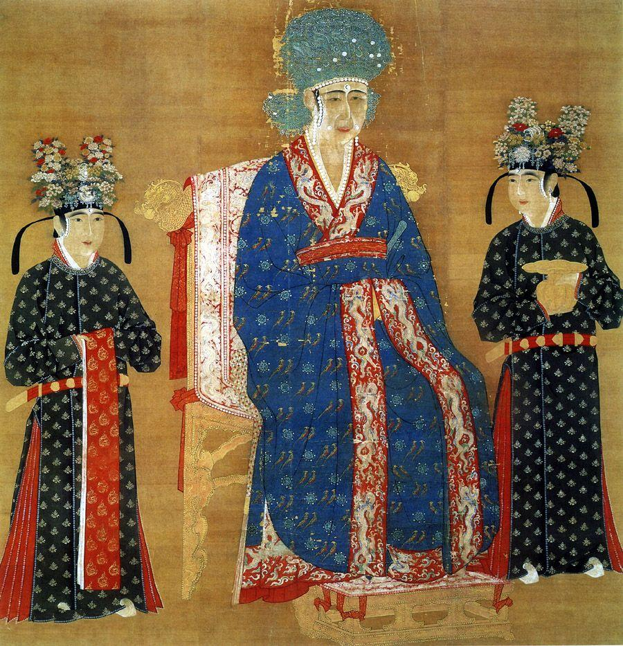
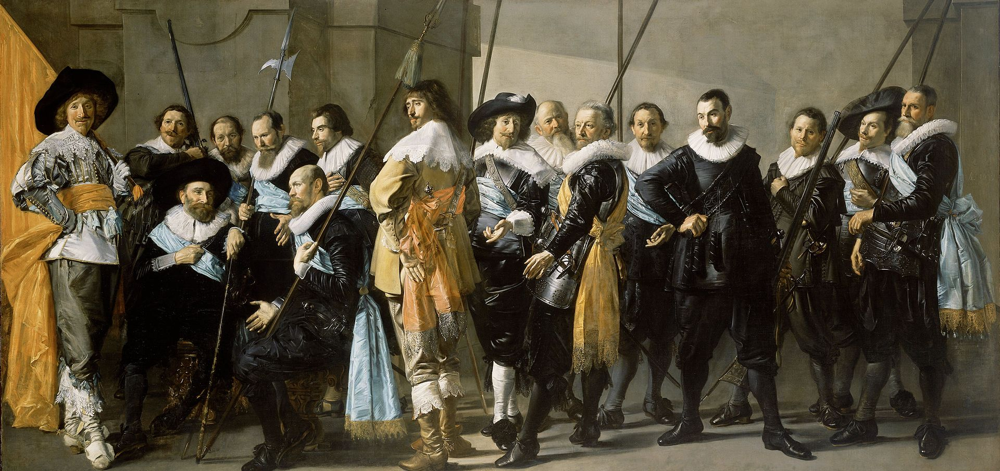
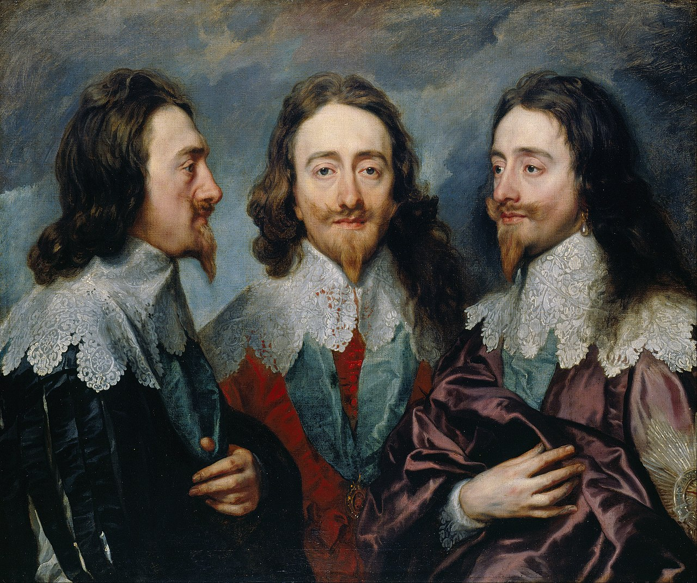
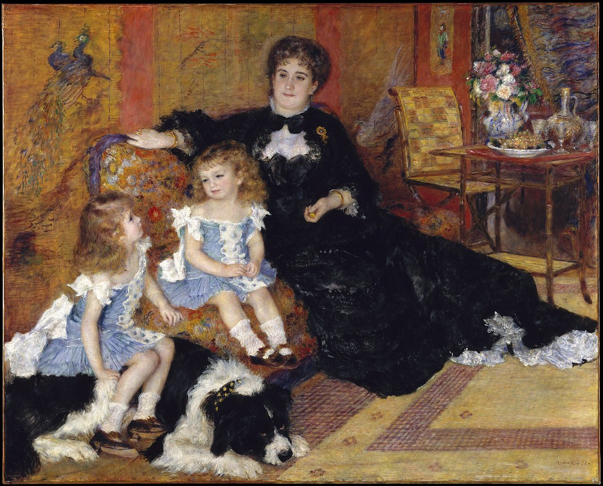
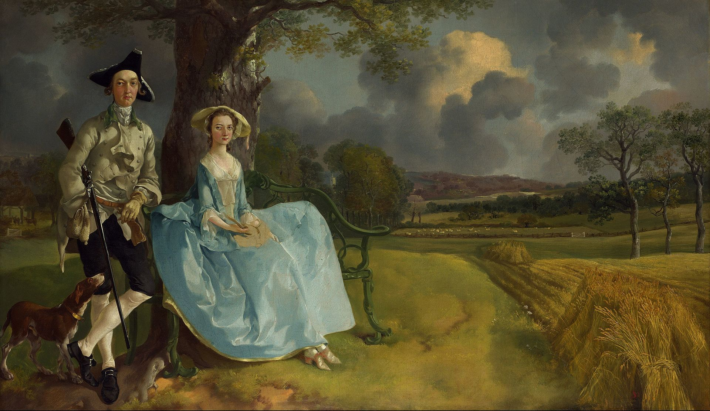
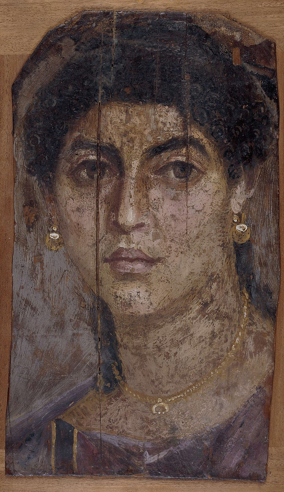

Portrait


Frans Hals, later finished by Pieter Codde. De Magere Compagnie. 1637. Oil on canvas, 209 × 429 cm. Group portraits were important in Dutch Golden Age painting

Anthony van Dyck, Charles I in Three Positions, 1635–1636, shows profile, full face and three-quarter views, to send to Bernini in Rome, who was to sculpt a bust from this model.>

Thomas Gainsborough, Mr and Mrs Andrews on their estate, c. 1750.

Roman-Egyptian funeral portrait of a woman
